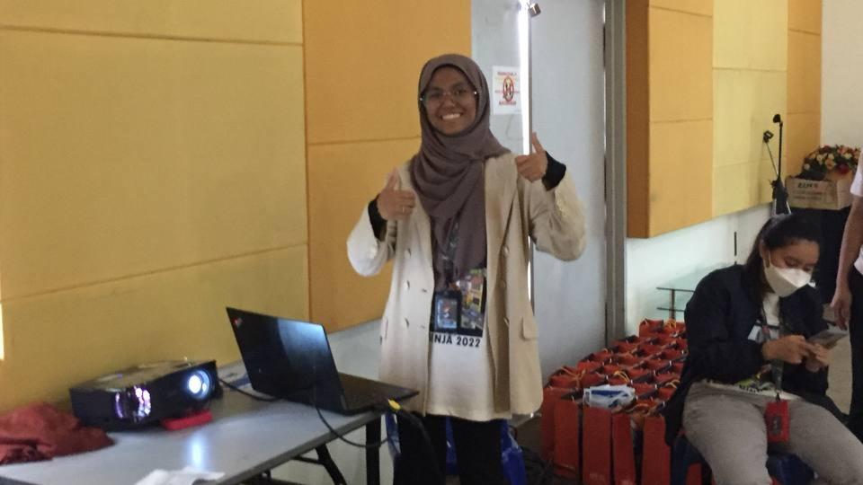

Professional experience
Event Assistant · Ford Motor Company
Role summary
- Supported the Ford Experience Hub as event crew for product, brand and visitor activities.
- Assisted with customer engagement, visitor management and smooth on-ground event operations.
- Interacted with members of the public throughout their event experience.
- Strengthened customer service, brand representation, communication, teamwork and professional event-execution skills.
Moments


